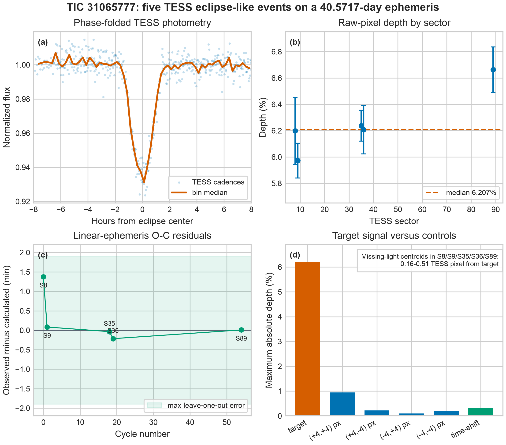

Measured the pixels
I extracted photometry directly from public TESS image cutouts in Sectors 8, 9, 35, 36, and 89 instead of relying on a single pre-made light curve.
Independent student research · NASA TESS public data
I analyzed five eclipse-like events associated with TIC 31065777, measured a stable 40.5717-day clock, and built a fully reproducible evidence package around what the data support—and what they do not.
Public research release · RNAAS manuscript prepared
The research question
A repeated dip can be astrophysical, instrumental, or contamination from a nearby source. The useful question is not simply whether a folded plot looks convincing. It is whether the timing survives held-out observations, the depth survives reasonable measurement choices, and the missing light localizes near the star.
That distinction shaped the entire project: measurement first, controls second, interpretation last.
How I tested it
I extracted photometry directly from public TESS image cutouts in Sectors 8, 9, 35, 36, and 89 instead of relying on a single pre-made light curve.
I repeated the fit across four aperture sizes, omitted each observing sector in turn, bootstrapped event times, and compared the signal with spatial and time-shift controls.
Difference images place the missing-light centroid 0.16–0.51 TESS pixel from the catalog target position—consistent at TESS resolution, but not enough to rule out every unresolved blend.
The evidence
Event fits, phase coherence, aperture robustness, spatial controls, and difference-image localization are shown together below.

What the data support
The five event times are coherent, the measured depth is stable across apertures, and the lost-light position is consistent with the catalog target at TESS resolution.
What remains open
This work does not claim a planet, a new physical anomaly, or a fully identified eclipsing system. Higher-resolution follow-up is needed to distinguish those possibilities.
Open science by design
Full research record